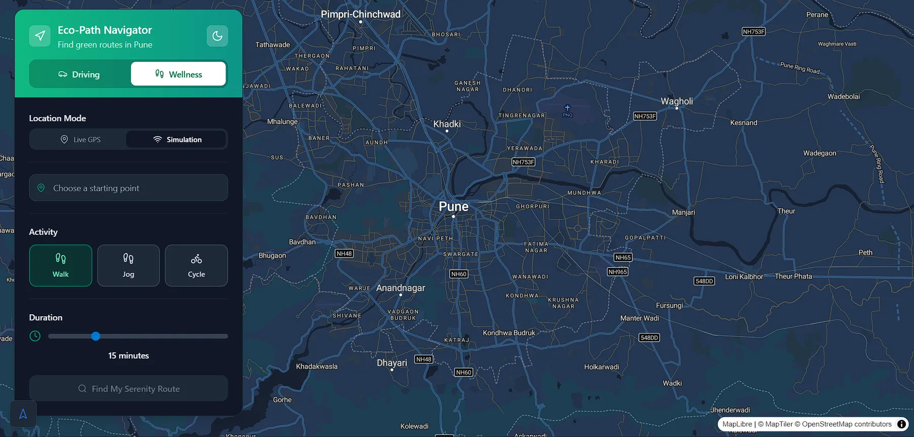
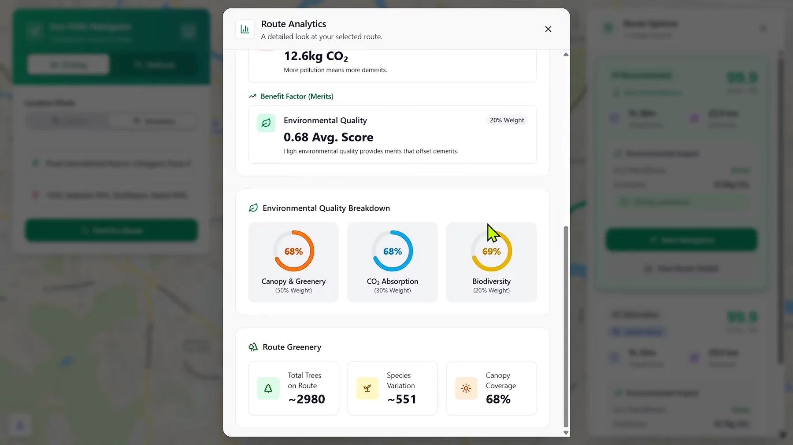
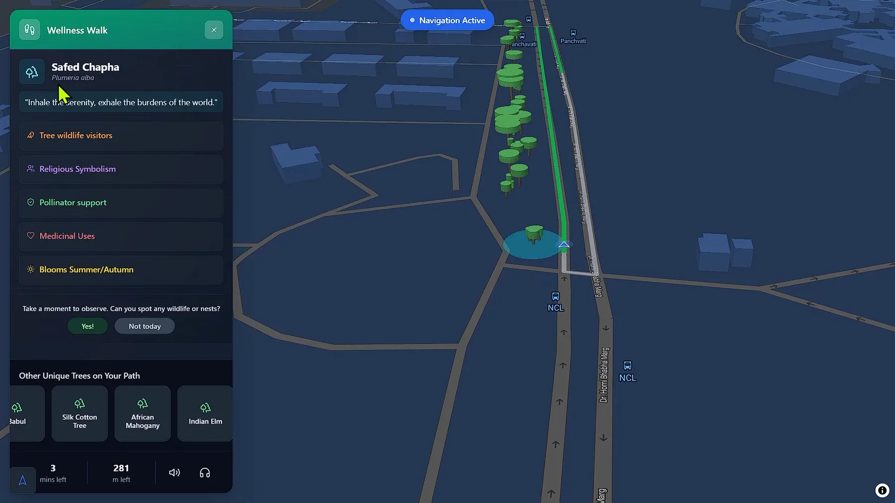
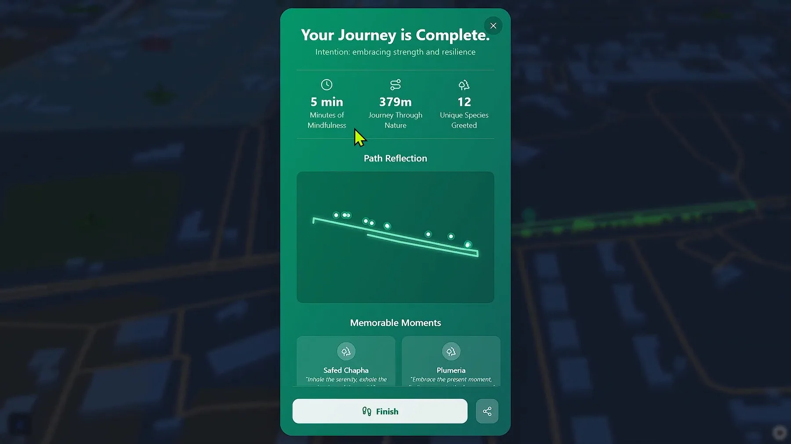

Problem
Urban mobility tools usually optimize only for speed, while users also need lower-emission paths and mentally restorative walking experiences.
Approach
EcoPath combines route intelligence with guided meditation prompts, allowing users to select calmer and greener path options instead of purely shortest-time routing.
- Eco-aware path recommendations
- Audio-guided walk experiences
- Nature-context prompts for mindful city movement
Key Constraints and Fixes
- Current release is desktop-first; mobile app adaptation is in progress
- Routing quality dropped where footpath geometry was missing or incomplete
- Tree-cluster narration was curated to avoid overlapping or clumsy guidance moments
Key Technical Decisions
- Released desktop MVP first to validate route-plus-meditation behavior before mobile app build
- Introduced fallback routing priority when footpath data was unavailable
- Curated tree narration sequencing to reduce overlapping cues in dense clusters
Media Gallery




Outcomes
- Introduced a differentiated wellness-plus-mobility product direction
- Combined technical routing logic with human-centered experience design
- Created a deployable concept for city-level eco-walk use cases